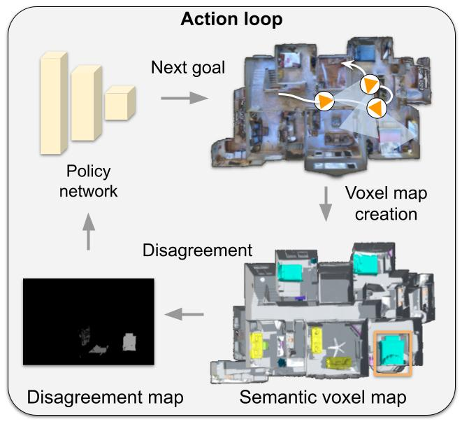

Action loop

Our policy predicts long-term goals for the agent. The agent builds a semantically consistent voxel map of the environment by projecting detected objects into a 3D voxel-map. The voxel-map is down-projected onto a top-down view and a disagreement map is computed by assigning a disagreement score value to each cell based on one of two measures.The disagreement map is the input of the policy network. The policy is trained to predict the goal that maximizes the total disagreement.